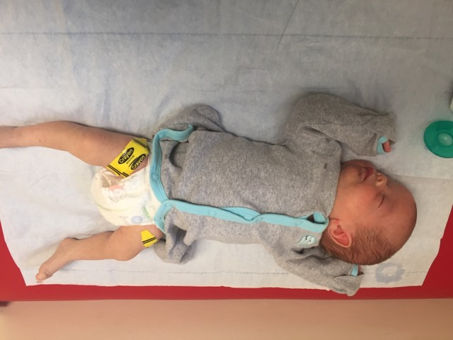

Hello my name is William
professional eater / world class snuggler / future wolverine
Lets start with the essentials. My parents are Dennis and Kelly Walker. Despite supporting rival sports programs they still managed to fall in love and that is why I am here today. I am an incredible eater and a fighter. I enjoy the little things like napping with dad and looking over legal documents with mom. Although I am still a little small, I should be able to cast a line out and reel in some big ones with my cousins and uncles (asuming there aren't any pesky gators in the water).
